始めに
今回は、課題管理アプリを作成しました。
私は学生なのですが（ってAbout me で書いてたか）、この前課題の存在を知らないままになんか課題未提出とかなっちゃってしかも成績も下がるっていうことを体験したので、ぷんぷんなのです！
といきたいところなのですが、全面的に私が悪いのでむーむーとしか言えません（むーむー）
とまぁ、課題の提出計画票を教科ごとに出されても管理しにくい！し、いつ何を提出したらいいのかわかりにくい！
そして私のような人間が自然発生するのです・・・
ということで、すべての課題をまとめて管理できるように、アプリを作成しました！（おら～～ってやったんで３日で作成できました。どや、すごない？）
機能
この課題管理アプリは複雑です！（私にしてみれば）
まず、セクションが３つ存在します！[ Manager ] [ Calender ] [ homeworks ] です。
それぞれ、今日の課題と直近の課題を表示するセクション、カレンダー上で課題を確認できるセクション、課題をリスト表示して、また、課題を追加、削除、編集できるセクションです。
・・・すみません。作成期間のことを思い出してテンションめちゃ下がってます（ㇷフｆ）
課題のデータはローカルストレージに保存するようにしています。また、データ容量の制限をオーバーしたりというふうになったら怖いので、月初め（～月１日）に先々月の課題データを削除するようにしています！
それぞれのセクションごとに、もっと具体的に機能紹介をしてきます！（まず課題を作成しなくてはいけないので、[ homeworks ] セクションから機能紹介させていただきます）
[ homeworks ]
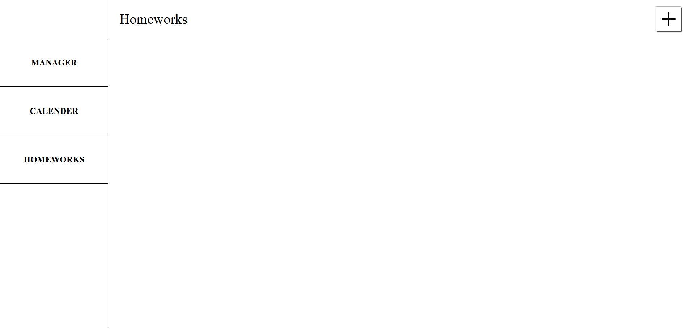
右上のプラスマークから、新しい課題を追加することができます。クリックすると、次のようになります。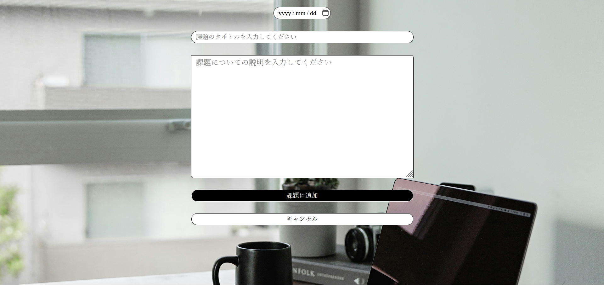
年月日、課題のタイトル、課題の詳細について、それそれの記入欄に入力して、[ 課題に追加 ] ボタンをクリックすると課題に追加できます。課題がリストに追加されます。
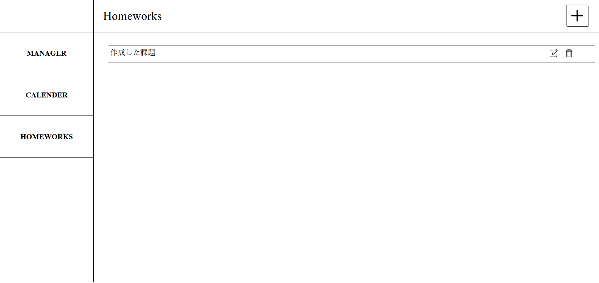
課題をクリックすると、課題の詳細が表示されます。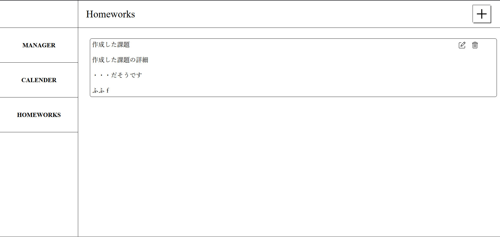
リストに追加した課題の右端の、編集ボタンをクリックすると、課題について、編集ができます。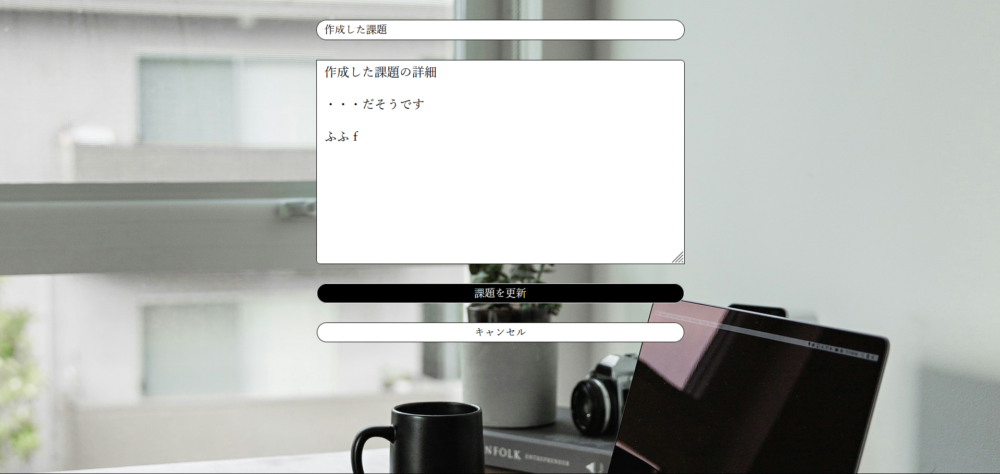
[ 課題を更新 ] ボタンをクリックすると、課題を更新してデータを保存することができます。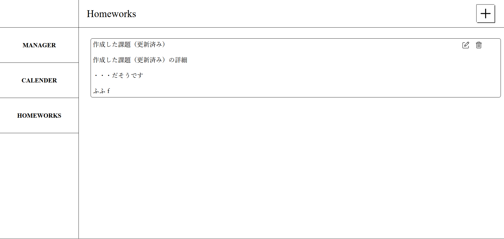
リストに追加した課題の右端の、削除ボタンをクリックすると、課題を削除できます。（わ～い♪） [ calender ]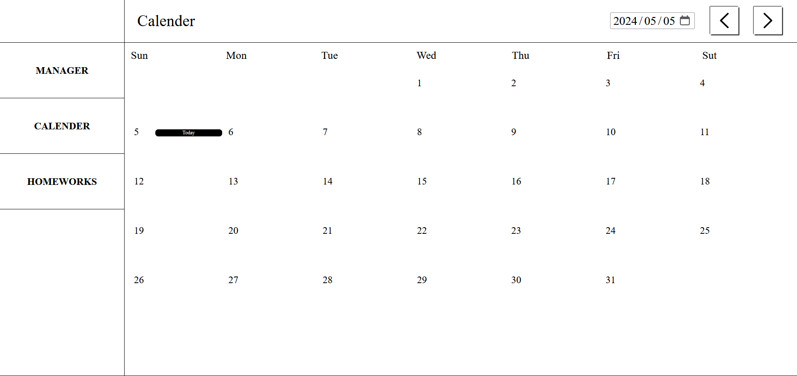
今日の日付には [ Today ] のラベルが表示されます上の日付入力欄（初期では今日の年月日が入力されています）や２つのボタン（左は先月へ、右は翌月へカレンダーを進めます）でカレンダーを操作できます。
（↓翌月へ進めました）
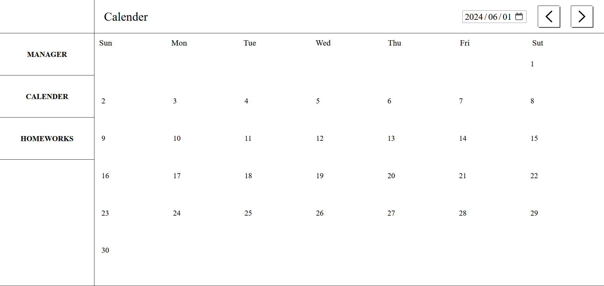
課題がある場合、課題を追加する際に設定した年月日の場所に課題のラベルが表示されます！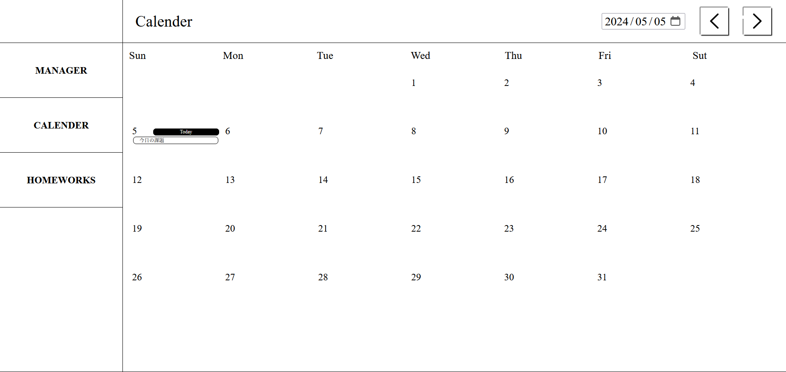
[ Manager ]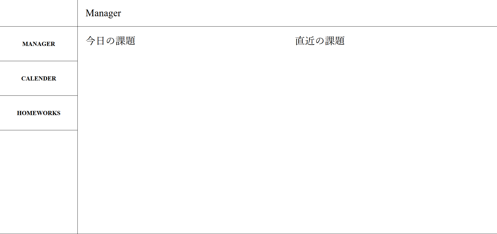
今日の日付に設定して追加した課題と、直近の課題のリストを表示します例えば、次の画像のように、今日、課題があり、今日のほかにも２日、課題がある日がある場合、
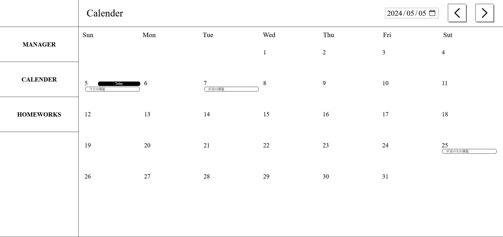
次のようになります。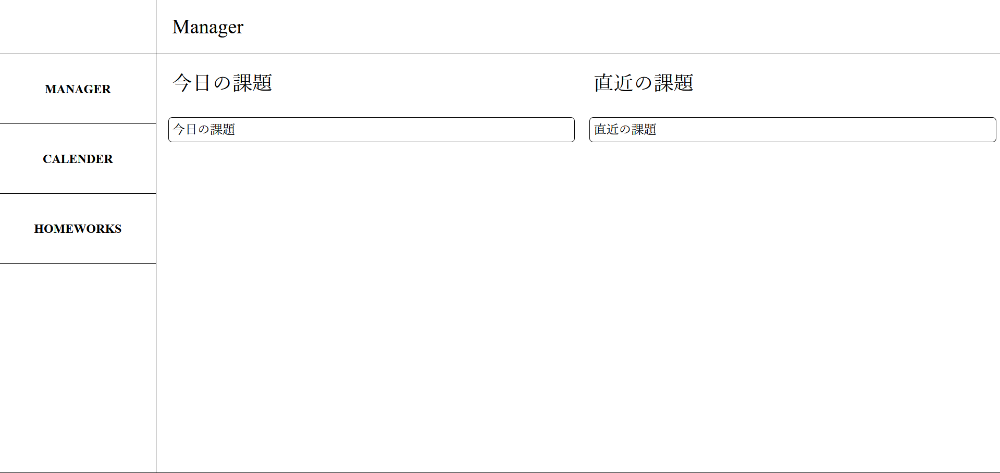
こちらも、課題をクリックして課題の詳細を表示できます！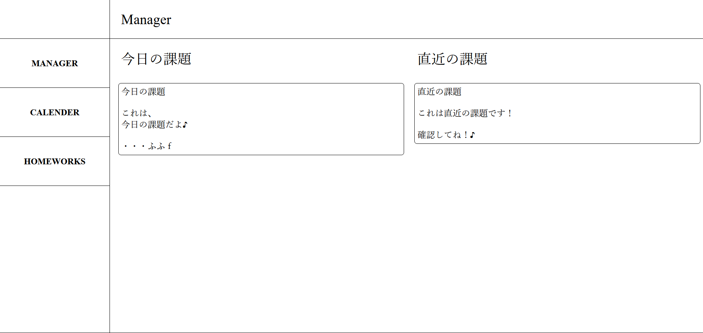
アプリ
最後に
この課題管理アプリは複雑です！（私にしてみれば）・・・初めにも書いたっけ？
しかし、見るだけだとまぁずいぶんシンプルですね（涙
でもソースコードはすごいのです！（いろんな意味で）ぜひとも、GitHub からソースコードを見てみて、改善点を指示してください！
ちなみに、課題のデータは次のようにしてローカルストレージに保存されています！：
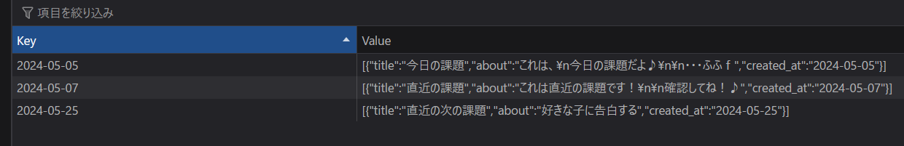
あ～疲れたゴールディンうぇぃーくもあと一日です！